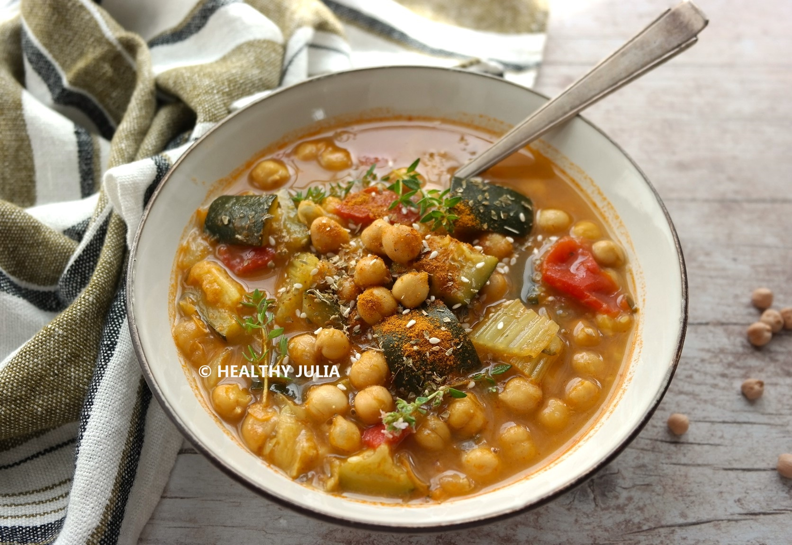

la harira

Préparation:30 min
Cuisson:1h
Pour:6 personnes
La harira est une soupe traditionnelle,
servie surtout au mois du Ramadan.
ingredients
- Tomates
- Pois chiches
- lantilees
- celeri
- coriandre
- persil
- oignon
- farine
Préparation
- Faire tremper les pois chiches la veille.
- Faire revenir l'oignon et le céleri.
- Ajouter les tomates mixées et les légumineuses.
- Laisser cuire une heure.
- Épaissir avec la farine délayée dans l'eau.
Bon appétit !
En savoir plus sur la harira